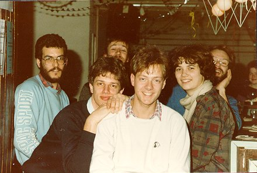

| |
|
Dit is een selectie uit het foto-album van Max van de Kamp, actief van 1982
tot 1994. In zijn lange loopbaan bij het E.S.M.G. heeft hij veel
leuke dingen meegemaakt en daarvan fotografisch verslag gedaan. Deze
foto's zijn nu op onze website geplaatst, zodat iedereen de herinneringen
weer op kan halen.

Natuurlijk zijn de foto's van Max en het zou netjes zijn als je even contact
met hem opneemt als je een foto wilt gebruiken, bijvoorbeeld voor publicatie.
Reacties naar: Max van de Kamp
De enorme verzameling is onderverdeeld in verschillende
hoofdstukjes. Deze zijn chronologisch geordend.
|
|